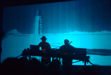
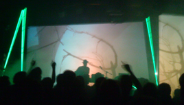
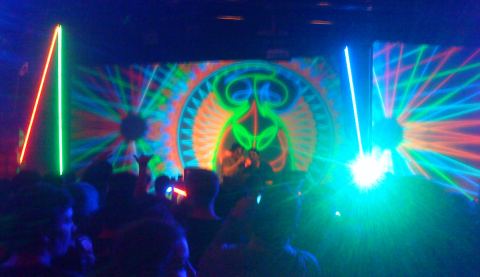

Modeselektooooor!

MDSLKTR
With easter coming up, several days with about 20C and lots of sun the nature is vomiting flowers and small green leaves down here. Unfortunately I have plenty to do indoors in front of my laptop, so until know I've only enjoyed the weather through the window (and the grapevine)... and via the nice temperatures in the evenings ‘cause for some reason I only manage to get out at night. This is partly because I can only work so much but mostly because there have been plenty of social get-togethers over the last couple of weeks. One of these social happenings is the reason I'm writing a small post today. This saturday MG, RL and I went to a concert with Modeselektor at Halle02. I saw them live once, back in Copenhagen but that was outside, so there was no real club-feeling to it (they did cover the first couple of rows of people in champagne though). This time however it was pure clubbin'. We arrived around 22:00 when the doors opened since I wanted to listen to the warm-up called Phon.O. It turned out that we could have waited quite a bit and enjoyed a couple of more caipirinhas though. When we arrived a couple of youngsters were practicing their skills behind a couple of turntables (read: laptop) which was okayish. After we had cosumed a couple of drinks a more experienced guy took over and he played until past midnight without any sign of neither Phon.O nor Modeselektor. Phon.O went on stage around 1ish and kicked ass. He was really good but having waited for several hours it was like he got more response between tracks than during... well either way - he was pretty cool. At around 2 Modeselektor final went on stage - and what an entrance. They played first the theme of 'Dallas' (I think) and then 'Alf', then entered the stage and kicked A** BIG TIME. Damn they were good. Not much of their Thom Yorke collaborations but loads and loads of roaring tough devastating beats and plenty of attitude. Also this time the first couple of rows got champagne sprayed all over them - wonder if this is their trademark. They played for almost two hours and finished in style while people were still shouting for more. All this just to say that despite the late arrival the concert was really outstanding, so if you have the change Modeselektor live is really one for the scrapbooks... hence this post.


Sunday I'll leave for a week in DK including the easter days. Plenty of appointments already, so it will be pretty busy. Unfortunately the forecasts are predicting rain and wind... but what the heck, I'll be in DK, have plenty to do on the thesis and plenty of family and friends to hang out with.
See you around,
KBS
-- THIS and THIS video are from the tour the gig in Halle02 was part of --
Wednesday, 28 March 2012
